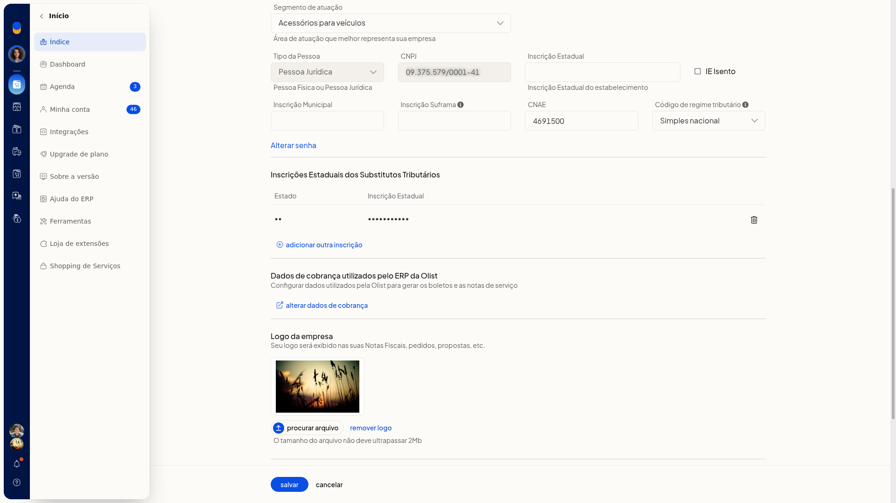
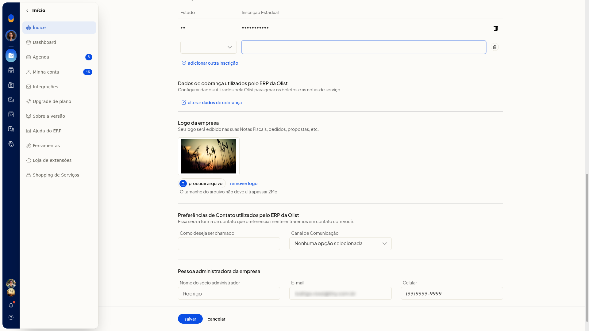
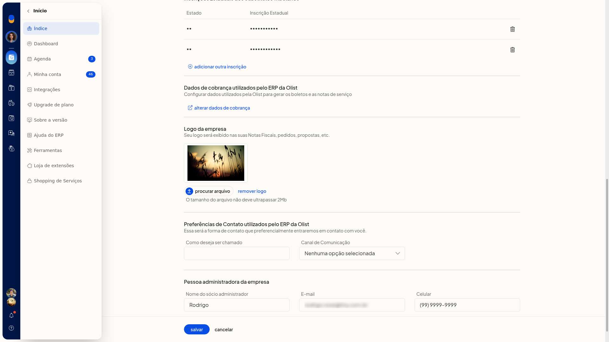

Incluir inscrição estadual de substituto tributário
No ERP da Olist, você inclui a inscrição estadual de substituto tributário no cadastro já existente da empresa, na tela Dados da empresa. A inscrição só fica registrada quando você salva.
Pré-requisitos
- A tela não fica disponível para empresas no plano Conta Digital da Olist.
- Se a opção não aparecer para você, peça acesso ao administrador da conta.
Importante
- A inscrição incluída fica só na tela até você clicar em Salvar.
- Voltar descarta a linha que ainda não foi salva.
Instruções
-
Acesse Configurações > Configurações do Sistema ERP.
-
Na aba Geral, clique em Alterar dados da empresa.


-
Em Inscrições Estaduais dos Substitutos Tributários, clique em adicionar outra inscrição.

-
Escolha a UF e informe a inscrição. A linha entra na tabela e permanece só até salvar.

-
Clique em Salvar para gravar a inscrição. A alteração só fica registrada nesse momento.
Resultado
Depois de salvar, a inscrição estadual de substituto tributário fica gravada no cadastro da empresa.